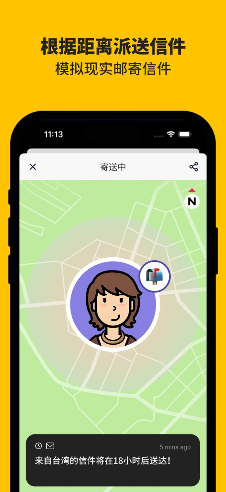

被微信小红点逼疯那天，我给自己找了个二十小时才到的笔友
一个被即时通讯搞得焦头烂额的上班族，如何靠Slowly的慢速书信重新找回与人交流的松弛感——从一封自动配对的盲盒信开始。
那是周三下午三点十七分。
我记得这么清楚是因为那个红色小圆点在屏幕右上角跳了整整四十七分钟，我每关掉一个对话框就有三个新消息蹦出来。工作群@我、老同学发的拼多多助力、外卖员的定位推送、还有我不知道哪来的相亲对象发了一条"在吗"。我把手机扣在键盘上，盯着天花板数了八颗荧光灯管才缓过来。
朋友下午喝茶时随口提了一句："你要不要试试那个写信的应用？信要走十几个小时才到的那个。"我以为是某个新出的邮件客户端，没往心里去。直到晚上刷到一条短视频，画面里一个信封被慢悠悠地拖过地球仪，配文是："这里的消息不会秒回，也不会已读不回。"
下载的时候我其实没抱什么期待。App Store里社交应用那么多，哪个不是主打"即时""高效""秒连全球用户"？点进注册页的那一刻，我才发现画风真的不一样。头像框旁边有个小小的信封图标，注册完第一封信弹出来，上面一行字："欢迎来到Slowly。你的第一封信需要花大约二十小时才能送到收信人手里。"
二十小时。我盯着屏幕愣了好一会儿——上一次发一个消息要等二十小时才收到回复，大概是高中时写的同学录。
Slowly的官网介绍里把这个延迟叫做"the magic of time"（时间的魔力）。信不是直接推到对方屏幕上的，它要真真切切地"上路"，根据两个用户的实际地理距离计算送达时间：同城可能也要六七个小时，跨洋的话十八到三十小时不等。送达时间在寄出那一刻就显示在信封底部，像邮局贴的邮戳，不是倒计时，是正计时——你看着那行数字从20:14:03慢慢往下跳，反而有一种奇异的踏实感。

第一次用自动配对是注册第三天的晚上。那天我刚好被一个紧急需求搞到很晚，对着电脑屏幕发呆的时候想起了这个功能。自动配对是Slowly里最有仪式感的交友入口：你写好一封信，系统从全球用户里抽出一到三位收信人，寄出去之前你对对方的了解只有头像、昵称和所在国家——像给远方抽盲盒。
我写了一封很随意的信，说今天加班加到怀疑人生，想找个人聊聊各自城市里凌晨的便利店都卖什么。写的时候没抱什么期望，反正每天只有一次机会，不行就明天再来。点"开始匹配"之后，系统给了我三位候选人：一个日本东京的护士，一个在葡萄牙读研究生的巴西人，还有一个头像特别可爱、叫"Mochi"的新加坡女生。我给三个人都发了——Slowly的自动配对允许你把同一封信同时发给多个候选人，反正每天一次的次数限制在匹配阶段就已经消耗掉了。
接下来就是等。这是我在Slowly里学到的第一课：等。信送出去之后你什么都做不了，不能催、不能撤回、不能看对方读没读——甚至连"已读"这个概念在这里都是反过来的：对方回信了才代表收到了，没回信不代表没看到，可能只是还没想好怎么写。
Mochi是十二小时后先回信的。她说新加坡凌晨的便利店最神奇的是二十四小时都有现做的鱼丸面，而且老板永远记得附近熟客要什么汤底。我盯着屏幕上的那几行字，注意到她的来信上贴了一枚新加坡鱼尾狮的邮票——Slowly里每封信右上角都有邮票，自己寄信时可以从邮票册里选一枚贴上，收到的信上的邮票则直接归你收藏。邮票不能重复使用但可以无限次贴，就像真实世界里盖过邮戳的邮票留作纪念，想要同款得自己去解锁、去商店买，或者等朋友当礼物送。
我们后来保持着每周两到三封的频率。她讲新加坡的校园生活和食阁文化，我讲北京的通勤和地铁里的奇葩事。Slowly的信件没有字数限制，有时候她一封信能写两三千字，讲她周末去徒步遇到一只野生猴子抢走了她的三明治，细节饱满到我读的时候忍不住笑出声。我后来去Slowly文档里翻才知道，这种长书信反而比短消息更受老用户欢迎——有人在应用里保持了几年的笔友关系，往来信件能攒成一本小册子。
但Slowly也不是只有浪漫。用了大概两个月的时候，我遇到一个让我有点不知道怎么应付的笔友——一开始聊得挺好的，但后来每封信都变成他单方面的输出，我这边越来越难接话。Slowly没有"已读不回"这个功能，不回信就相当于消失，可我又不想直接把人删掉。
翻Slowly文档的时候才搞清楚，应用里有两个力度不同的选项：隐藏和移除。隐藏是暂时把这位笔友从列表里藏起来，直到他寄来下一封新信才重新出现，但他仍然占用你的活跃笔友名额——适合那种"暂时没话说但不想断"的暂停状态。移除就干脆多了，等于拉黑：你不再收到他的任何信件，他也无法再与你配对，而且被移除后立刻释放名额让给新的笔友。还有一个细节挺妙的：移除不会向对方弹出任何通知，但对方寄出的信会永远停在"已送达未读"状态，聪明的笔友自己会明白发生了什么。我选了隐藏，放了两周他也没再寄信，我就顺势撤销掉了——至少没做太绝。
现在那个相亲对象在微信里还躺着，我偶尔刷到消息还是会烦躁。但Slowly不一样。每天早上打开应用先看一眼有没有新信，信封图标亮起来的时候那种小确幸，是小红点永远给不了的。有时候Mochi回信会比预计送达时间晚一两个小时，我也不急——毕竟等了那么久都等了，差这几十分钟算什么。
前几天我在Slowly文档里看到有人说，这个应用最奇妙的地方不在于它让世界变慢了，而在于它让你被迫变慢了。没有撤回、没有已读、没有消息轰炸，你只能写、寄、等。然后某一刻你会发现，原来跟一个人说"我今天被一只猴子抢了三明治"这件事，真的需要用一整封信那么长的篇幅才讲得清。
这套资料在三个仓库都能拿到，GitHub、Gitee和GitCode同步维护着Slowly相关的文档与素材，国内访问选后者更顺畅。